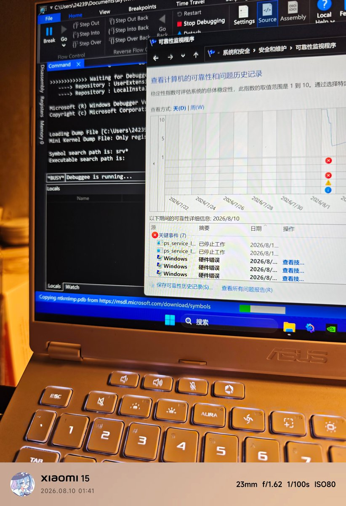

たたなこ
@tatanakots
@siuuuuneo pico串流感觉不好用但是买了pico家的设备貌似不得不用这个
正因如此我一直在考虑买steam vr的追踪设备还是pico家的追踪
steam vr的追踪的话一体机自带的系统里面就用不了，虽然我也不怎么用这个系统

小黄鱼a
@siuuuuneo
啥办法都试过了怎么一装Pico串流服务就还是爆炸
电脑这半年莫名其妙打游戏打一半TDR超时,重装系统才发现是这个服务的问题,出错重试和服务自动启动不管怎么样都关不掉,一会儿跟显卡驱动冲突一会儿跟GPU硬件冲突一会儿跟游戏反作弊冲突
用其它串流好像就用不了自家的全身追踪了好麻烦呢 https://t.co/SqYnjdnXCX